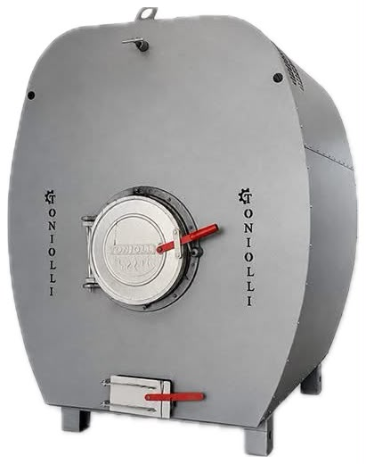
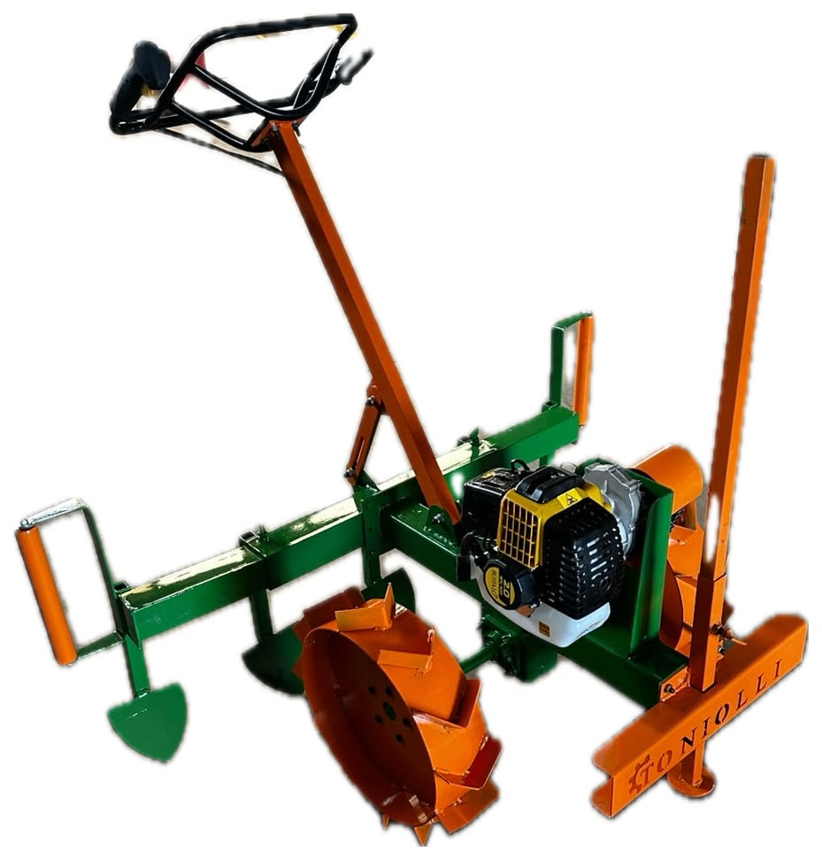
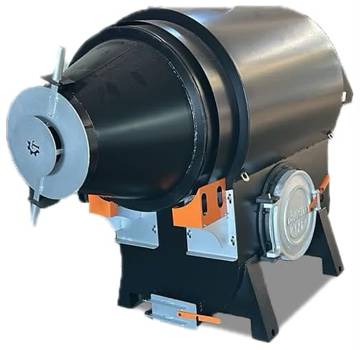

Eficiência térmica
Aquecimento pensado para o ambiente do aviário.
AQUECIMENTO EFICIENTE PARA O SEU AVIÁRIO
Soluções de aquecimento a pellet, lenha e cavaco para ajudar você a manter o conforto térmico do seu aviário.
Aquecimento pensado para o ambiente do aviário.
Modelos a pellet, lenha e cavaco.
Equipamentos voltados para o uso no campo.
Converse com nossa equipe para tirar dúvidas.
NOSSAS SOLUÇÕES
Conheça os aquecedores Titan, o desidratador e o arador de cama para aviários. Entre em contato para conhecer os modelos disponíveis.
Consultar modelos
Consulte informações técnicas, disponibilidade e orçamento com nossa equipe.
Ver detalhes e ficha técnica →
Equipamento para o manejo da cama de aviários. Consulte informações e disponibilidade.
Ver detalhes e ficha técnica →
SOBRE A EMPRESA
Trabalhamos com soluções de aquecimento para aviários, com equipamentos para diferentes necessidades do campo. Nosso objetivo é ajudar produtores a encontrar equipamentos adequados às necessidades da sua operação.